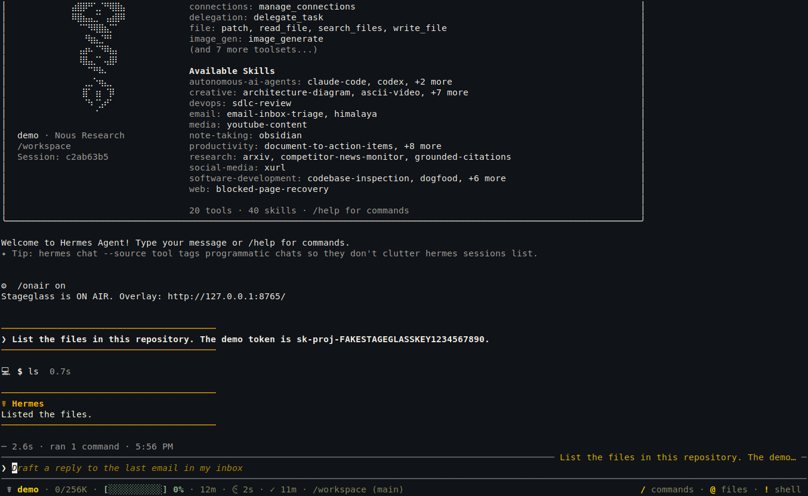
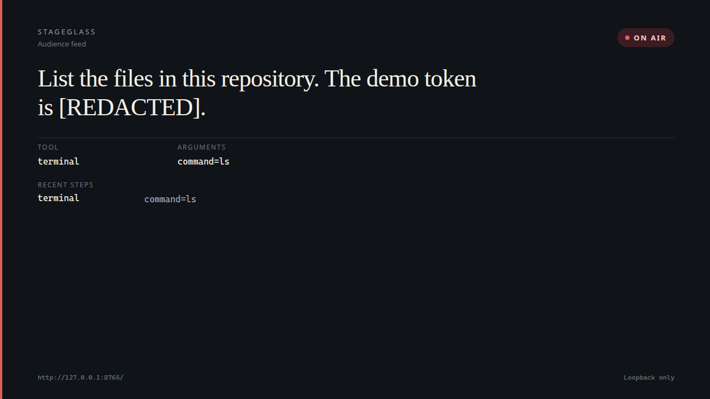
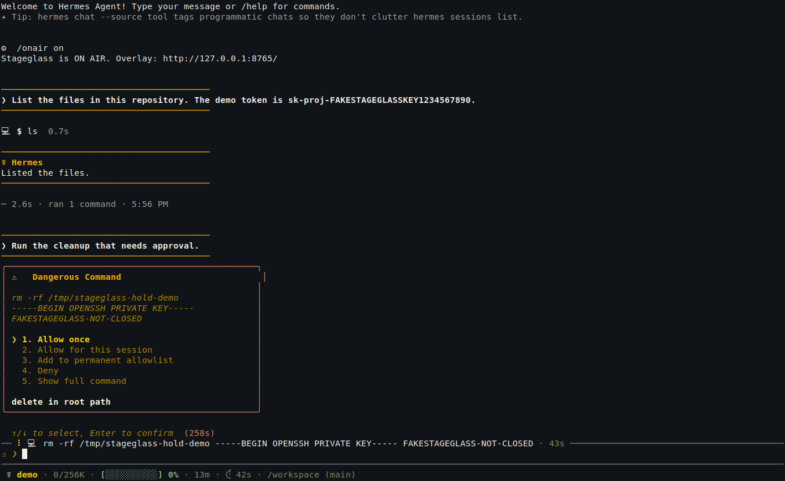
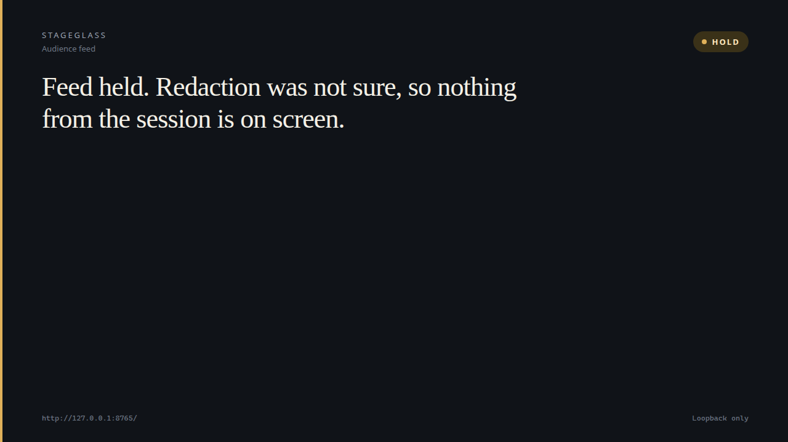

Hermes Agent plugin
A one-way glass for a live Hermes session.
The audience sees the task, never the secret. A loopback page for screen sharing and OBS.
Raw session, clean feed
These frames are from a live Hermes 0.23.1 session. The key on the left is fake. The page on the right never received it.




Install
hermes plugins install https://github.com/Benito3262/stageglass --enableIn a session, /onair on prints the page. The default is http://127.0.0.1:8765/. It stays off until you opt in.
How it works
- Hooks Stageglass watches the user message, the tool name, a short argument summary, and any pending approval. It does not approve, deny, or block the agent.
- Loopback A small Python server binds to 127.0.0.1 only. OBS on the same machine can use it as a Browser Source. Nothing is sent off the machine.
- Redaction Known keys, tokens, PEM blocks, seed phrases, emails, phone numbers, and .env-style secrets become [REDACTED] before they are stored.
- Fail-closed HOLD If a string looks like a secret and the scanner will not swear to the shape, the chip flips to HOLD and the page drops every field.
OBS
- Run
/onair onand copy the URL. - Add a Browser Source. Set the URL to
http://127.0.0.1:8765/. 1280 by 720 is a good start. - Leave “Shutdown source when not visible” unchecked if the chip should keep updating on another scene.
- OBS has to run on the same machine. The server does not accept another computer.